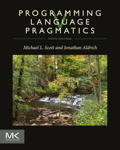
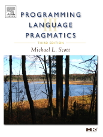
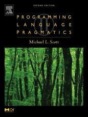
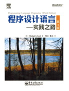
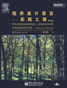
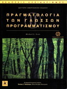

Schools that have adopted at least one edition of the book.
Please report updates to
 or
or
 .
.
- University of Rochester
- Carnegie Mellon University
- Allegheny College, Meadville, PA
- American University of Beirut
- Bethune-Cookman College, Daytona Beach, FL
- Bilkent University, Ankara, Turkey
- Biola University, La Mirada, CA
- Birla Institute of Technology & Science, Pilani, India
- Bloomsburg University, Pennsylvania
- Boise State University, Idaho
- Bowdoin College
- Brooklyn College
- Bryn Mawr College
- California State University, Channel Islands
- California State University, Dominguez Hills
- California State University, Long Beach
- California State University, Northridge
- California State University, East Bay
- California State University at Hayward
- California State University, Northridge
- California State University, San Bernardino
- Calvin College, Grand Rapids, MI
- Carleton College, Northfield, MN
- Carleton University, Ottawa, Ontario, Canada
- Case Western Reserve University, Cleveland, OH
- Catholic University of America, Washington, DC
- Central Michigan University
- Cheyney University of Pennsylvania
- The Chinese University of Hong Kong
- The Citadel, Charleston, SC
- Clarion University
- Clarkson University, Potsdam, NY
- Clemson University
- Clearwater Christian College, Clearwater, FL
- College of Staten Island
- College of William and Mary
- The College of Wooster, OH
- Colorado School of Mines
- Concordia University, Quebec
- Dalhousie University, Halifax, Nova Scotia
- Darmstadt University of Technology, Germany
- Denison University, Granville, OH
- DePaul University, Chicago, IL
- Drexel University, Philadelphia, PA
- East Carolina University, Greenville, NC
- Eastern Michigan Univesity
- Eastern Oregon University, La Grande
- Edinboro University of Pennsylvania
- Elizabeth City State University, NC
- Embry-Riddle Aeronautical University, Daytona Beach, FL
- Fayetteville State University, NC
- Ferris State University
- Fisk University, Nashville, TN
- Florida State University
- Florida Tech
- Franklin University, Columbus, OH
- Gandhi Institute of Technology and Management, Visakhapatnam/Hyderabad/Bengaluru, India
- George Mason University
- George Washington University
- Georgia Tech
- Gordon College, Wenham, MA
- Grambling State University
- Grand Valley State University, Allendale, MI
- Harvey Mudd College, Claremont, CA
- Haverford College, Haverford, PA
- Hope College, Holland, MI
- Humboldt State University, Arcata, CA
- Idaho State University, Pocatello
- Illinois Institute of Technology
- Illinois Wesleyan University
- Indian Institute of Technology, Hyderabad
- Indian Institute of Technology, Kanpur
- Indian Institute of Technology, Kharagpur
- Indiana University, South Bend
- Instituto Superior Técnico, Portugal
- International University of Sarajevo, Bosnia and Herzegovina.
- Iona College, New Rochelle, NY
- Iowa State University
- Istanbul Technical University, Turkey
- Jackson State University, Jackson, MS
- Kaplan College (online)
- Kennesaw State University, Kennesaw, GA
- Kutztown University, Kutztown, PA
- Kyungpook National University, Korea
- Lake Forest College, Chicago, IL
- Langston University School of Business
- Laurentian University, Sudbury, ON
- Lawrence Technological University, Southfield, MI
- Lebanon Valley College, PA
- Lehigh University
- Loyola University, Chicago
- Loyola Marymount University, Los Angeles, CA
- Macquarie University, Sydney, Australia
- Manhattan College, NY
- Marlboro College, VT
- McGill University
- Metropolitan State College of Denver
- Michigan Technological University, Houghton
- Middle Tennessee State University
- Minnesota State University – Mankato
- Missouri State University
- Missouri University of Science and Technology
- Montana Tech of the University of Montana
- Muskingum College, New Concord, OH
- Nanjing University, China
- Taiwan Ocean University
- National Technological University (Walden University, online)
- New Jersey Institute of Technology, Newark
- New York Institute of Technology, Old Westbury
- New York University
- North Central College, Naperville, IL
- Notre Dame University
- Ohio State University
- Ohio University, Athens OH
- Pace University, New York City
- Pennsylvania State University
- Penn State, Great Valley
- People’s Education Society, Bengaluru, India
- Portland State University
- Prairie View A&M University, Prairie View, TX
- Purdue University
- Queens College, City University of New York
- Randolf-Macon College, Ashland, VA
- Regis University, Denver, CO
- Rensselaer Polytechnic Institute
- Rochester Institute of Technology
- Rutgers University
- Saginaw Valley State University, University Center, MI
- St. Ambrose University, Davenport, IA
- Saint Joseph Engineering College (Visvesvaraya Technological University), Mangalore, India
- Saint Louis University
- St. Mary's University, Winona, MN
- Saint Thomas Acquinas College, Sparkill, NY
- St. Thomas College of Engineering & Technology, Kozhuvalloor, India
- Samford University, Birmingham, AL
- San Diego State University
- San Jose State University
- Sangji University, Korea
- Santa Fe University of Art and Design
- Seattle Pacific University
- Seattle University
- Simon Bolivar University, Caracas, Venezuela
- Simpson College, Indianola, Iowa
- Sonoma State University, Rohnert Park, CA
- South Dakota School of Mines and Technology
- Southern Methodist University, Dallas, TX
- Southern Polytechnical University
- Southern Illinois University, Edwardsville
- State University of New York at Albany
- State University of New York at Binghamton
- State University of New York College at Oneonta
- State University of New York at Oswego
- State University of New York at Plattsburgh
- Stony Brook University – State University of New York
- SUNY Korea, Incheon
- Texas A&M University
- Taylor University, Upland, IN
- Tennessee Tech University
- Texas Tech University, Lubbock, TX
- Thiel College, Greenville, PA
- Troy University, Global Campus, Troy, AL
- Tufts University
- UEZO (Fundaçäo Centro Universitário Estadual da Zona Oeste), Rio de Janeiro, Brazil
- United States Naval Academy
- University of Alabama
- University of Alaska – Anchorage
- University of Arizona
- University of Arkansas
- University of Bologna, Italy
- University of British Columbia
- University at Buffalo – State University of New York
- University of California at Santa Cruz
- University of California, Irvine
- University of Central Missouri, Warrensburg
- University of Colorado at Boulder
- University of Delaware
- University of Evansville (Indiana)
- University of Florida – Gainesville
- University of Georgia
- University of Hartford, CT
- University of Hawaii at Honolulu
- University of Hawaii at Manoa
- University of Helsinki, Finland
- University of Illinois – Chicago
- University of Illinois at Springfield
- University of Illinois at Urbana-Champaign
- University of Kansas
- University of Louisiana – Lafayette
- University of Maryland
- University of Memphis, TN
- University of Miami
- University of Michigan at Ann Arbor
- University of Minnesota – Duluth
- University of Mississippi, Oxford, MI
- University of Missouri, Columbia, MO
- University of Missouri – Kansas City
- University of Mount Union, Alliance, OH
- University of Nebraska – Lincoln
- University of Nevada – Reno
- University of New Orleans
- University of New Mexico
- University of North Carolina, Asheville
- University of North Carolina – Charlotte
- University of North Carolina, Chapel Hill
- University of North Carolina, Wilmington
- University of North Dakota
- University of Oklahoma
- University of Pisa, Italy
- University of Puerto Rico, Mayagüez
- University of Pune, India
- University of Rhode Island
- University of San Diego
- University of Scranton
- University of South Alabama
- University of South Carolina
- University of Southern California
- University of Tennessee, Knoxville
- University of Texas – Arlington
- University of Texas, Austin
- University of Texas – Pan American
- University of Texas – San Antonio
- University of the Virgin Islands
- University of Virginia
- University of Waterloo
- University of West Florida
- University of Western Ontario
- University of Zambia
- University of Wisconsin – La Crosse
- University of Wisconsin – Madison
- University of Wisconsin – Milwaukee
- Utah State University
- Valparaiso University, Valparaiso, IN
- Vanderbilt University
- Villanova University
- Virginia Polytechnic Institute and State University
- Wagner College, Staten Island, NY
- Wake Forest University, Winston-Salem, NC
- Washington State University – Pullman
- Washington State University – Vancouver
- Washington University in Saint Louis
- Weber State University, Ogden, UT
- West Virginia University Institute of Technology
- Western Washington University
- Wheaton College, Wheaton, IL
- Xavier University, Cincinnati, OH
- York University, Toronto, Ontario, Canada
Some schools don't have an official course textbook, but recommend the text at least as highly as other alternatives:
- College of Engineering, Chengannur, India
- Columbia College of Missouri
- Cornell University
- Facultat D’Informàtica de Barcelona
- IMPAC University, Punta Gorda, Florida
- Johns Hopkins University
- Louisiana State University
- Manipal University, India
- McMaster University, Hamilton, ON
- Morehead State University
- University of California, Berkeley
- University of California, Davis
- University of Jyvaskyla, Finland
- University of New Haven
- University of Texas at Dallas
- University of Toronto
- Uppsala University, Sweden
- Wright State University
- Yonsei University, Seoul, South Korea
Finally, there are some schools that recommend the text as a principal supplemental reference in their compiler course (with a main compiler text):
- Barcelona Tech (UPC)
- Columbia University
- Harvard University
- Radford University, Radford, VA
- University of California at San Diego
- University of Minnesota
- University of Oregon
- Universiteit Utrecht










 Back to the book home page
Back to the book home page